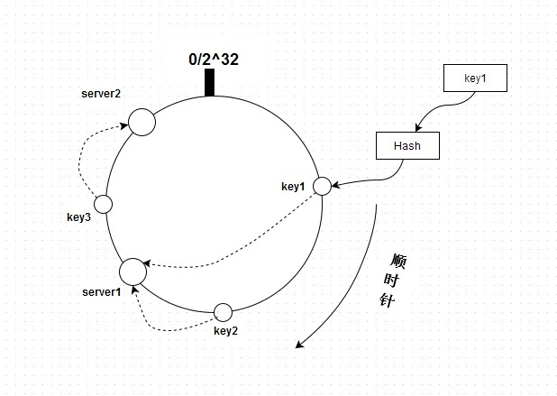

<!DOCTYPE html>
<html>
<head><meta name="generator" content="Hexo 3.9.0">
  <meta charset="utf-8">
  
  <title>Redis 笔记之十一-集群 Cluster | 守株阁</title>
  <meta name="viewport" content="width=device-width, initial-scale=1, maximum-scale=1">
  <meta name="description" content="背景在 Redis Cluster 方案诞生以前，在 Redis 集群遇到单机资源和流量瓶颈时，有两种常见分布式解决方案：  客户端方案：需要自己处理分区逻辑、路由、故障转移。 代理方案：减轻了客户端的职责和压力，架构上的负担过重。  Redis Cluster 的出现，极大地降低了架构师的负担，解放了生产力。 数据分布数据分布理论   分区方式 特点 代表产品     哈希分区 离散度好 数据分">
<meta name="keywords" content="Redis">
<meta property="og:type" content="article">
<meta property="og:title" content="Redis 笔记之十一-集群 Cluster">
<meta property="og:url" content="http://yoursite.com/2019/11/09/Redis-笔记之十一-集群-Cluster/index.html">
<meta property="og:site_name" content="守株阁">
<meta property="og:description" content="背景在 Redis Cluster 方案诞生以前，在 Redis 集群遇到单机资源和流量瓶颈时，有两种常见分布式解决方案：  客户端方案：需要自己处理分区逻辑、路由、故障转移。 代理方案：减轻了客户端的职责和压力，架构上的负担过重。  Redis Cluster 的出现，极大地降低了架构师的负担，解放了生产力。 数据分布数据分布理论   分区方式 特点 代表产品     哈希分区 离散度好 数据分">
<meta property="og:locale" content="zh-Hans">
<meta property="og:image" content="http://yoursite.com/2019/11/09/Redis-笔记之十一-集群-Cluster/一致性散列.jpg">
<meta property="og:image" content="http://yoursite.com/2019/11/09/Redis-笔记之十一-集群-Cluster/Redis%20Cluster%20的槽位映射.jpg">
<meta property="og:updated_time" content="2019-11-09T12:42:28.345Z">
<meta name="twitter:card" content="summary">
<meta name="twitter:title" content="Redis 笔记之十一-集群 Cluster">
<meta name="twitter:description" content="背景在 Redis Cluster 方案诞生以前，在 Redis 集群遇到单机资源和流量瓶颈时，有两种常见分布式解决方案：  客户端方案：需要自己处理分区逻辑、路由、故障转移。 代理方案：减轻了客户端的职责和压力，架构上的负担过重。  Redis Cluster 的出现，极大地降低了架构师的负担，解放了生产力。 数据分布数据分布理论   分区方式 特点 代表产品     哈希分区 离散度好 数据分">
<meta name="twitter:image" content="http://yoursite.com/2019/11/09/Redis-笔记之十一-集群-Cluster/一致性散列.jpg">
  
    <link rel="alternate" href="/atom.xml" title="守株阁" type="application/atom+xml">
  
  
    <link rel="icon" href="/favicon.png">
  
  
  <link rel="stylesheet" href="/css/style.css">
  

<link rel="stylesheet" href="/css/prism.css" type="text/css">
<link rel="stylesheet" href="/css/prism-line-numbers.css" type="text/css"></head>
</html>
<body>
  <div id="container">
    <div id="wrap">
      <header id="header">
  <div id="banner"></div>
  <div id="header-outer" class="outer">
    
    <div id="header-inner" class="inner">
      <nav id="sub-nav">
        
          <a id="nav-rss-link" class="nav-icon" href="/atom.xml" title="RSS Feed"></a>
        
        <a id="nav-search-btn" class="nav-icon" title="搜索"></a>
      </nav>
      <div id="search-form-wrap">
        <form action="//google.com/search" method="get" accept-charset="UTF-8" class="search-form"><input type="search" name="q" class="search-form-input" placeholder="Search"><button type="submit" class="search-form-submit">&#xF002;</button><input type="hidden" name="sitesearch" value="http://yoursite.com"></form>
      </div>
      <nav id="main-nav">
        <a id="main-nav-toggle" class="nav-icon"></a>
        
          <a class="main-nav-link" href="/">首页</a>
        
          <a class="main-nav-link" href="/archives">归档</a>
        
          <a class="main-nav-link" href="/about">关于</a>
        
      </nav>
      
    </div>
    <div id="header-title" class="inner">
      <h1 id="logo-wrap">
        <a href="/" id="logo">守株阁</a>
      </h1>
      
        <h2 id="subtitle-wrap">
          <a href="/" id="subtitle">一切都是守株待兔，如切如磋，如琢如磨。I am just joking.</a>
        </h2>
      
    </div>
  </div>
</header>
      <div class="outer">
        <section id="main"><article id="post-Redis-笔记之十一-集群-Cluster" class="article article-type-post" itemscope itemprop="blogPost">
  <div class="article-meta">
    <a href="/2019/11/09/Redis-笔记之十一-集群-Cluster/" class="article-date">
  <time datetime="2019-11-09T11:13:46.000Z" itemprop="datePublished">2019-11-09</time>
</a>
    
  </div>
  <div class="article-inner">
    
    
      <header class="article-header">
        
  
    <h1 class="article-title" itemprop="name">
      Redis 笔记之十一-集群 Cluster
    </h1>
  

      </header>
    
    <div class="article-entry" itemprop="articleBody">
      
        <!-- Table of Contents -->
        
        <h1 id="背景"><a href="#背景" class="headerlink" title="背景"></a>背景</h1><p>在 Redis Cluster 方案诞生以前，在 Redis 集群遇到单机资源和流量瓶颈时，有两种常见分布式解决方案：</p>
<ul>
<li>客户端方案：需要自己处理分区逻辑、路由、故障转移。</li>
<li>代理方案：减轻了客户端的职责和压力，架构上的负担过重。</li>
</ul>
<p>Redis Cluster 的出现，极大地降低了架构师的负担，解放了生产力。</p>
<h1 id="数据分布"><a href="#数据分布" class="headerlink" title="数据分布"></a>数据分布</h1><h2 id="数据分布理论"><a href="#数据分布理论" class="headerlink" title="数据分布理论"></a>数据分布理论</h2><table>
<thead>
<tr>
<th style="text-align:center">分区方式</th>
<th style="text-align:center">特点</th>
<th style="text-align:center">代表产品</th>
</tr>
</thead>
<tbody>
<tr>
<td style="text-align:center">哈希分区</td>
<td style="text-align:center">离散度好 数据分布业务无关 无法顺序访问</td>
<td style="text-align:center"><strong>KV型</strong> Redis Cluster Cassandra Dynamo <strong>Elastic Search</strong></td>
</tr>
<tr>
<td style="text-align:center">顺序分区</td>
<td style="text-align:center">离散度易倾斜 数据分布业务相关 可顺序访问</td>
<td style="text-align:center"><strong>表型 Bigtable</strong> HBase Hypertable</td>
</tr>
</tbody>
</table>
<p>由于 Redis Cluster 采取哈希分区规则，常见的哈希分区规则有</p>
<h3 id="节点取余分区"><a href="#节点取余分区" class="headerlink" title="节点取余分区"></a>节点取余分区</h3><p>使用特定的数据，如 Redis 的键或用户 Id，再根据节点数量 N 使用公式：<code>hash(key)% N</code>（经典的双层 hash），用来决定数据映射到哪一个桶里。这种方案存在一个问题，当节点数量变化时，整个映射关系都要重新计算。</p>
<p>如果使用这种哈希方式，一开始就要规划好分区，保证可以支撑<strong>未来一段时间的数据量</strong>，扩容时可以天然采用翻倍扩容。</p>
<h3 id="一致性哈希"><a href="#一致性哈希" class="headerlink" title="一致性哈希"></a>一致性哈希</h3><p>一致性哈希（Distributed Hash Table）的实现思路是为系统中每个节点分配一个 token，范围一般在 0~2 power 32，这些 token 构成一个 hash 环。数据读写执行查找时，先 hash，然后顺时针（向大数方向）选最近一个 bucket。</p>
<p></p>
<p>一致性散列的好处在于加入和删除节点只影响哈希环中相邻的节点，对其他节点无影响。但一致性哈希分区存在几个问题：</p>
<ul>
<li>加减节点会造成哈希环中部分数据无法命中（取余分区一样存在这个问题），需要手动处理或者忽略这部分数据，因此一致性哈希常用于缓存场景。</li>
<li>当使用少量节点时，节点变化将大范围影响哈希环中数据映射，因此这种方式不适合少量数据节点的分布式方案。</li>
<li>普通的一致性哈希分区在增减节点时需要增加一倍或减去一般节点才能保证数据和负载的均衡。</li>
</ul>
<h3 id="虚拟槽分区"><a href="#虚拟槽分区" class="headerlink" title="虚拟槽分区"></a>虚拟槽分区</h3><p>虚拟槽分区兼顾了取余分区和一致性哈希的优点，使用分散度良好的哈希函数把所有数据映射到一个固定范围的整数集合中，整数定义为槽（slot）。这个数一般远大于节点数，比如 Redis Cluster 的槽范围是 0 -16383。槽是集群内数据管理和迁移的基本单位。采用大范围的槽的目的是为了方便数据拆分和集群扩展，每个节点负责一定数量的槽。</p>
<h2 id="Redis-数据分区"><a href="#Redis-数据分区" class="headerlink" title="Redis 数据分区"></a>Redis 数据分区</h2><p>slot = crc16(key) * 16383 </p>
<p>注意：</p>
<ul>
<li>crc16 是一种哈希函数</li>
<li>用 * 取余的方法</li>
</ul>
<p>每个节点负责维护一部分槽以及槽锁映射的键值数据。</p>
<p></p>
<p>Redis 虚拟槽分区的特点：</p>
<ul>
<li>解耦数据和几点之间的关系，简化了节点扩容和收缩难度。</li>
<li>节点自身维护槽的映射关系，不需要客户端或者代理服务维护槽分区元数据。</li>
<li>支持节点、槽、键之间的映射查询，用于数据路由、在线伸缩等场景。</li>
</ul>
<h2 id="Redis-数据分区限制"><a href="#Redis-数据分区限制" class="headerlink" title="Redis 数据分区限制"></a>Redis 数据分区限制</h2><ol>
<li>只允许对映射到同一个 slot 的 key 进行批量操作，如 mget、mset。</li>
<li>只支持对映射到同一个 node 的 key 进行事务操作。</li>
<li>大数据结构（hash/list）必须映射到同一节点（key 在最小的可分割单位）。</li>
<li>不支持多数据空间，只能使用 db0。有了 Redis Cluster，会推动多数据空间消亡。</li>
<li>复制结构只支持一层，从节点只能复制主节点。</li>
</ol>
<h1 id="搭建集群"><a href="#搭建集群" class="headerlink" title="搭建集群"></a>搭建集群</h1><h2 id="准备节点"><a href="#准备节点" class="headerlink" title="准备节点"></a>准备节点</h2><p>Redis Cluster 至少需要 6 个节点。<br>开启配置<code>redis-enabled yes</code>。</p>
<p>准备配置文件：</p>
<pre class="line-numbers language-bash"><code class="language-bash">daemonize <span class="token function">yes</span> <span class="token comment" spellcheck="true">#开启后台运行</span>
port 8001 <span class="token comment" spellcheck="true">#工作端口</span>
bind 172.16.0.15 <span class="token comment" spellcheck="true">#绑定机器的内网IP,一定要设置呀老铁，不要用127.0.0.1</span>
<span class="token function">dir</span> /usr/local/redis-cluster/8001/ <span class="token comment" spellcheck="true">#指定工作目录，rdb,aof持久化文件将会放在该目录下，不同实例一定要配置不同的工作目录</span>
cluster-enabled <span class="token function">yes</span> <span class="token comment" spellcheck="true">#启用集群模式</span>
cluster-config-file nodes-8001.conf <span class="token comment" spellcheck="true">#生成的集群配置文件名称，集群搭建成功后会自动生成，在工作目录下</span>
cluster-node-timeout 5000 <span class="token comment" spellcheck="true">#节点宕机发现时间，可以理解为主节点宕机后从节点升级为主节点时间</span>
appendonly <span class="token function">yes</span> <span class="token comment" spellcheck="true">#开启AOF模式</span>
pidfile /var/run/redis_8001.pid <span class="token comment" spellcheck="true">#pid file所在目录</span>
<span aria-hidden="true" class="line-numbers-rows"><span></span><span></span><span></span><span></span><span></span><span></span><span></span><span></span><span></span></span></code></pre>
<p>要特别注意：</p>
<ul>
<li>dir、log 等目录一定要可写。</li>
<li>cluster-config-file 是会被自动生成的，类似 sentinel 会覆写 sentinel 节点的配置文件。</li>
</ul>
<h2 id="节点握手"><a href="#节点握手" class="headerlink" title="节点握手"></a>节点握手</h2><p>广播协议。<br>共识协议。<br>发布订阅。<br>流言协议。</p>

      
    </div>
    <footer class="article-footer">
      <a data-url="http://yoursite.com/2019/11/09/Redis-笔记之十一-集群-Cluster/" data-id="ckmvxpxs8009bxaa1qknxdwid" class="article-share-link">分享</a>
      
      
      
  <ul class="article-tag-list"><li class="article-tag-list-item"><a class="article-tag-list-link" href="/tags/Redis/">Redis</a></li></ul>

    </footer>
  </div>
  
    
 <script src="/jquery/jquery.min.js"></script>
  <div id="random_posts">
    <h2>推荐文章</h2>
    <div class="random_posts_ul">
      <script>
          var random_count =4
          var site = {BASE_URI:'/'};
          function load_random_posts(obj) {
              var arr=site.posts;
              if (!obj) return;
              // var count = $(obj).attr('data-count') || 6;
              for (var i, tmp, n = arr.length; n; i = Math.floor(Math.random() * n), tmp = arr[--n], arr[n] = arr[i], arr[i] = tmp);
              arr = arr.slice(0, random_count);
              var html = '<ul>';
            
              for(var j=0;j<arr.length;j++){
                var item=arr[j];
                html += '<li><strong>' + 
                item.date + ':&nbsp;&nbsp;<a href="' + (site.BASE_URI+item.uri) + '">' + 
                (item.title || item.uri) + '</a></strong>';
                if(item.excerpt){
                  html +='<div class="post-excerpt">'+item.excerpt+'</div>';
                }
                html +='</li>';
                
              }
              $(obj).html(html + '</ul>');
          }
          $('.random_posts_ul').each(function () {
              var c = this;
              if (!site.posts || !site.posts.length){
                  $.getJSON(site.BASE_URI + 'js/posts.js',function(json){site.posts = json;load_random_posts(c)});
              } 
               else{
                load_random_posts(c);
              }
          });
      </script>
    </div>
  </div>

    
<nav id="article-nav">
  
    <a href="/2019/11/10/阿里如何做全链路压测/" id="article-nav-newer" class="article-nav-link-wrap">
      <strong class="article-nav-caption">上一篇</strong>
      <div class="article-nav-title">
        
          阿里如何做全链路压测
        
      </div>
    </a>
  
  
    <a href="/2019/11/08/保险专业基本功/" id="article-nav-older" class="article-nav-link-wrap">
      <strong class="article-nav-caption">下一篇</strong>
      <div class="article-nav-title">保险专业基本功</div>
    </a>
  
</nav>

  
</article>
 
     
  <div class="comments" id="comments">
    
     
       
      <div id="cloud-tie-wrapper" class="cloud-tie-wrapper"></div>
    
       
      
      
  </div>
 
  

</section>
           
    <aside id="sidebar">
  
    

  
    
    <div class="widget-wrap">
    
      <div class="widget" id="toc-widget-fixed">
      
        <strong class="toc-title">文章目录</strong>
        <div class="toc-widget-list">
              <ol class="toc"><li class="toc-item toc-level-1"><a class="toc-link" href="#背景"><span class="toc-number">1.</span> <span class="toc-text">背景</span></a></li><li class="toc-item toc-level-1"><a class="toc-link" href="#数据分布"><span class="toc-number">2.</span> <span class="toc-text">数据分布</span></a><ol class="toc-child"><li class="toc-item toc-level-2"><a class="toc-link" href="#数据分布理论"><span class="toc-number">2.1.</span> <span class="toc-text">数据分布理论</span></a><ol class="toc-child"><li class="toc-item toc-level-3"><a class="toc-link" href="#节点取余分区"><span class="toc-number">2.1.1.</span> <span class="toc-text">节点取余分区</span></a></li><li class="toc-item toc-level-3"><a class="toc-link" href="#一致性哈希"><span class="toc-number">2.1.2.</span> <span class="toc-text">一致性哈希</span></a></li><li class="toc-item toc-level-3"><a class="toc-link" href="#虚拟槽分区"><span class="toc-number">2.1.3.</span> <span class="toc-text">虚拟槽分区</span></a></li></ol></li><li class="toc-item toc-level-2"><a class="toc-link" href="#Redis-数据分区"><span class="toc-number">2.2.</span> <span class="toc-text">Redis 数据分区</span></a></li><li class="toc-item toc-level-2"><a class="toc-link" href="#Redis-数据分区限制"><span class="toc-number">2.3.</span> <span class="toc-text">Redis 数据分区限制</span></a></li></ol></li><li class="toc-item toc-level-1"><a class="toc-link" href="#搭建集群"><span class="toc-number">3.</span> <span class="toc-text">搭建集群</span></a><ol class="toc-child"><li class="toc-item toc-level-2"><a class="toc-link" href="#准备节点"><span class="toc-number">3.1.</span> <span class="toc-text">准备节点</span></a></li><li class="toc-item toc-level-2"><a class="toc-link" href="#节点握手"><span class="toc-number">3.2.</span> <span class="toc-text">节点握手</span></a></li></ol></li></ol>
          </div>
      </div>
    </div>

  
    

  
    
  
    
  
    

  
    
  
    <!--微信公众号二维码-->


  
</aside>

      </div>
      <footer id="footer">
  
  <div class="outer">
    <div id="footer-left">
      &copy; 2014 - 2021 magicliang&nbsp;|&nbsp;
      主题 <a href="https://github.com/giscafer/hexo-theme-cafe/" target="_blank">Cafe</a>
    </div>
     <div id="footer-right">
      联系方式&nbsp;|&nbsp;magicliang@qq.com
    </div>
  </div>
</footer>
 <script src="/jquery/jquery.min.js"></script>
    </div>
    <nav id="mobile-nav">
  
    <a href="/" class="mobile-nav-link">首页</a>
  
    <a href="/archives" class="mobile-nav-link">归档</a>
  
    <a href="/about" class="mobile-nav-link">关于</a>
  
</nav>
    
<script>
// Elevator script included on the page, already.
window.onload = function() {
  var elevator = new Elevator({
    selector:'.back-to-top-btn',
    element: document.querySelector('.back-to-top-btn'),
    duration: 1000 // milliseconds
  });
}
</script>
      

  
    <script>
      var cloudTieConfig = {
        url: document.location.href, 
        sourceId: "",
        productKey: "e2fb4051c49842688ce669e634bc983f",
        target: "cloud-tie-wrapper"
      };
    </script>
    <script src="https://img1.ws.126.net/f2e/tie/yun/sdk/loader.js"></script>
    

  


<!-- author:forvoid begin -->
<!-- author:forvoid begin -->

<!-- author:forvoid end -->

<!-- author:forvoid end -->


  
    <script type="text/x-mathjax-config">
      MathJax.Hub.Config({
        tex2jax: {
          inlineMath: [ ['$','$'], ["\\(","\\)"]  ],
          processEscapes: true,
          skipTags: ['script', 'noscript', 'style', 'textarea', 'pre', 'code']
        }
      })
    </script>

    <script type="text/x-mathjax-config">
      MathJax.Hub.Queue(function() {
        var all = MathJax.Hub.getAllJax(), i;
        for (i=0; i < all.length; i += 1) {
          all[i].SourceElement().parentNode.className += ' has-jax';
        }
      })
    </script>
    <script type="text/javascript" src="https://cdn.rawgit.com/mathjax/MathJax/2.7.1/MathJax.js?config=TeX-AMS-MML_HTMLorMML"></script>
  


 <script src="/js/is.js"></script>


  <link rel="stylesheet" href="/fancybox/jquery.fancybox.css">
  <script src="/fancybox/jquery.fancybox.pack.js"></script>


<script src="/js/script.js"></script>
<script src="/js/elevator.js"></script>
  </div>
</body>
</html>